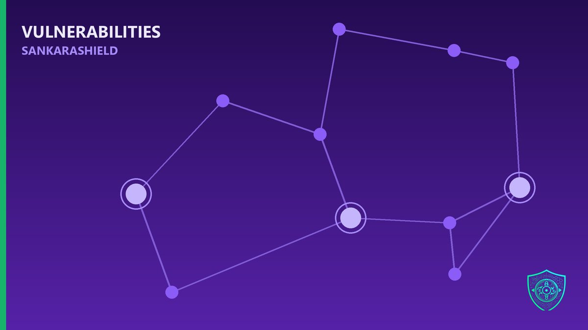

Four of the six vulnerabilities CISA flagged as actively exploited last week are older than the phone in your pocket.

August 26, 2026 KEV additions: CVE-2015-3246, CVE-2015-5287, CVE-2019-1068, CVE-2021-23758, CVE-2022-0995 — and one 2026 flaw. Eleven years of backlog, all being exploited today.
WHAT ACTUALLY HAPPENED
CISA added six vulnerabilities in a single drop. The list reads like an archaeology dig:
CVE-2015-3246 — Red Hat libuser race condition, local privilege escalation. CVE-2015-5287 — Red Hat ABRT privilege escalation. CVE-2019-1068 — Microsoft SQL Server remote code execution. CVE-2021-23758 — Ajax.NET Professional deserialization RCE. CVE-2022-0995 — Linux kernel out-of-bounds write. CVE-2026-8452 — Citrix NetScaler, the only fresh one.
Cisco Talos links much of this to UAT-10147, a Chinese cybercrime group chaining old Linux and Windows server flaws against education, media, technology and gaming targets globally.
Federal deadlines: August 29 for the SQL Server and NetScaler bugs, September 9 for the rest.
WHY OLD CVES ARE THE BETTER BUSINESS MODEL
A 2026 zero-day costs money, burns once, and gets patched in days.
A 2015 privilege escalation on an unmaintained RHEL box costs nothing, works forever, and nobody is watching for it — because your vulnerability programme quietly retired those CVEs from the dashboard years ago.
Attackers are not racing you to the newest bug. They are inventorying what you forgot to decommission. The build server nobody owns. The reporting database still on SQL Server 2016. The Linux VM that predates your current config management.
CVSS ages. Exploitability does not. A local privesc from 2015 is exactly as useful today on a host that never got rebooted.
Your oldest asset sets your real security posture — not your newest control.
WHAT TO DO NOW
SCAN FOR THESE SIX CVES SPECIFICALLY — do not assume age means absence, especially on long-lived Linux servers.
PULL YOUR ASSET INVENTORY BY BUILD DATE — anything older than five years with no clear owner is your actual attack surface.
- STOP FILTERING VULN REPORTS BY PUBLICATION YEAR KEV membership, not CVE age, should drive your patch priority.
CHECK FOR POST-EXPLOITATION, NOT JUST PATCH LEVEL — these are privilege escalation and RCE chains, so hunt for new local accounts, cron jobs and unexpected services.
Attackers do not care how old the exploit is. Only whether it still works.
What is the oldest production server in your environment — and who owns it today?